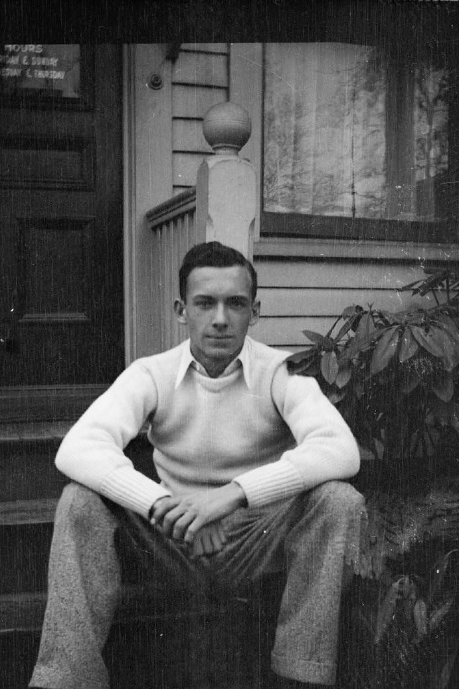

Poetry: It’s Not Like Texting
According to Everybody, you hate poetry.
That’s too bad—because your near-future involves reading, analyzing, and then writing about poems. You’re welcome!
But how to make this experience less frustrating (other than offloading the labor to AI)? The same way you survived those four days in Rome on your last family vacation: Learn how the locals communicate.
But how do poets communicate? Unfortunately for you, something like this:
Imagine waking up one Saturday morning to see the following text, sent by your best friend Jordan as you dreamt of seven-mouthed marshmallows and caramel-frappuccino ice plunges:
“I must still be asleep,” you conclude. But then you notice, glaring menacingly from the doorway, your ashen Maine Coon, Luz. Her breakfast is four hours late. And that’s definitely your screen-cracked, sticker-smeared laptop (Klarna payment due yesterday), its wobbly-hinged lid half-open, tossed atop a week’s (no—two weeks’) worth of soiled laundry.
“A brain injury. He finally wrecked that e-bike!”
Stop panicking: Jordan’s fine. He just decided to participate in a new trend he saw on TikTok and Instagram: Texting Like a Poet. #BerrymanVibes #thesaurus
What you read, therefore, was not “abby-normal gibberish,” as you later described it. Rather, those sixteen words—divided symmetrically into eight lines, every other one exactly two syllables long—constituted an example of the primary method poets use to communicate: Poetic Imagery.
What Is Poetic Imagery?
The use of vivid, descriptive language to create sensory experiences and mental pictures in the reader's mind. Rather than explaining an idea directly, a poet renders it through images: words and phrases that evoke the senses and trigger associations, memories, and emotions. The images themselves become the meaning.
Think of it this way: a novelist writing about loneliness might explain that a character feels isolated. A poet writing about the same experience might give us a single image, a cracked window, an empty table set for one, rain against glass, and trust that image to carry the full emotional weight.
This is why reading poetry slowly, and more than once, matters. The images don't announce themselves as important. You have to learn to notice them.
Poetic images typically appeal to one or more of the five senses. When you read a poem, ask yourself: what sense is this image activating?
A Four-Step Process for Analyzing Imagery
For a basic introduction to poetry analysis, use these four steps to move from noticing images toward interpreting a poem's possible meaning.
A word's denotation is its dictionary definition. Its connotation is everything else: the associations, feelings, memories, and ideas it triggers. When a poet writes "wheelbarrow," the denotation is simply a garden tool. But the connotations are far richer: labor, farms, rural life, sustenance, the ordinary made visible. When you annotate a poem's imagery, you're mapping those connotations. There are no wrong answers here; your personal associations are exactly what the analysis draws on.
William Carlos Williams — "The Red Wheelbarrow"

Below is "The Red Wheelbarrow" with its key images highlighted by sense. Notice: the poem contains only visual images.
The student reads each highlighted image and asks: what does this make me think of? What feelings or ideas does it suggest? For touchscreen devices or word processors, you can annotate directly on the document. Below are the student's notes.
The student now looks across all the images and asks: what do they have in common? What larger idea connects them? She links them to the poem's one non-image statement, "so much depends upon," and asks: what depends, and why?
All three images point toward a farm setting, the kind of place that produces food. The wheelbarrow is a tool. The chickens are food. The rain is what makes crops grow. These are things "so much depends upon"; we just don't think about them unless a poet forces us to look.
The student now organizes her thoughts into a coherent reading of the poem. This is not a final thesis; it's a first attempt at meaning, grounded in close observation of the images.
William Carlos Williams's "The Red Wheelbarrow" uses spare, precise imagery to make an argument about the value of things we take for granted. The poem's only direct statement is "so much depends / upon," and what follows are three visual images from a farm scene: a red wheelbarrow, rain water, white chickens. Each image suggests something we rely on for survival: tools, weather, food. Taken together, they point toward agriculture itself, the source of human sustenance that modern life has made nearly invisible. Williams's poem appears simple, but it communicates a complex idea: the things we ignore most completely are often the ones we could least afford to lose.
Sylvia Plath — "Morning Song"
Below is "Morning Song" with its key images highlighted by sense. A reminder: you don't need to highlight every word, only the images that feel most striking and meaningful.
The student notices that many of the images suggest contrasting emotional tones: some cold or detached, others surprisingly warm or hopeful.
The student maps the images into two emotional currents running through the poem, and notices something important about how the poem ends.
"fat gold watch": mechanical, not human
"New statue": cold, still
"I'm no more your mother / Than the cloud...": explicit denial
"cow-heavy": animal, not tender
"We stand round blankly as walls"
"your bald cry / Took its place among the elements": cosmic arrival
"moth-breath": fragile but present
"A far sea moves in my ear": vast, alive
"The clear vowels rise like balloons": joy, ascent
The imagery of disconnection is mostly visual (seeing the baby as object). The imagery of hope is mostly acoustic (hearing the baby's sounds). The poem shifts from eyes to ears, from looking at the baby to listening to it. By the end, the sound of the baby's voice rising like balloons suggests the mother is beginning, finally, to connect.
The student draws on all the annotated images to construct a first, coherent reading of the poem.
In "Morning Song," Sylvia Plath depicts two emotional currents in a new mother's experience: a surprising sense of disconnection from her infant, and a tentative, emerging hope. The poem's visual imagery consistently frames the baby as object rather than person; the child is compared to a watch, a statue, a cloud's reflection, suggesting a mother struggling to feel what she is "supposed" to feel. This emotional distance challenges the common assumption that maternal love is automatic and immediate. However, the poem's acoustic imagery tells a different story. The mother lies awake listening to her baby's "moth-breath" and hears in it something immense: "a far sea." By the final image, the baby's sounds rise "like balloons," a striking shift toward lightness and celebration. Plath's poem suggests that the bond between mother and child is not born in a moment, but built through the slow, intimate act of paying attention, of learning, finally, to listen.